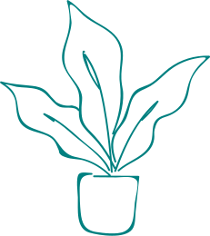

Any Place Studios
Why run your movement class with tools built for business meetings?
Our aim to create safer, simpler and more engaging live-video class experiences.
Stay up to date with what's coming 🔜 here